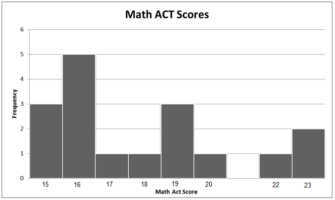

Statistics Unit
2.7b Measures of Central Tendency (Mean/Median/Midrange
Find the mean, median, and midrange for each of these data sets:
- 1,2,3,4,5,6,7,8,9
- 5,5,5,5,5,5,5,5,5,5
- 1,1,1,1,1,9,9,9,9,9
- 1,2,3,4,5,5,9,9,9,9
- 1,1,2,2,3,5,9,9,9,9
Which of these data sets have the same median? Same mean? Same midrange?
- Find the average (mean) math ACT score of the class.
- Find the median math ACT score of the class.
- Find the midrange of the math ACT scores of the class.
- Identify the mode of the math ACT scores of the class.
- Suppose a new student joined the class. The student’s math ACT score was a 35. How does this affect the mean, median, and midrange?